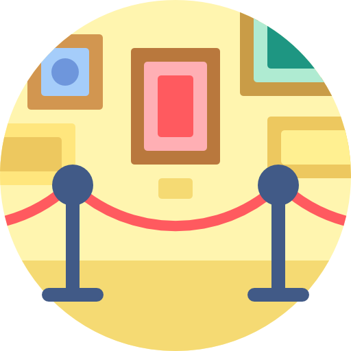
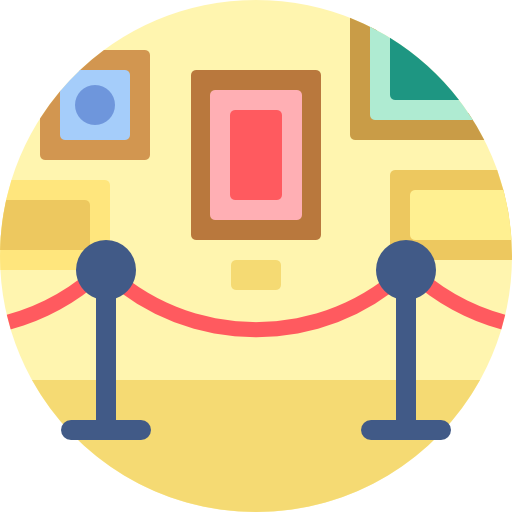
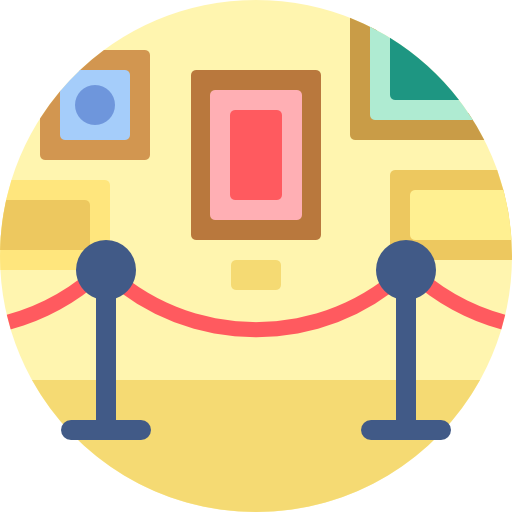
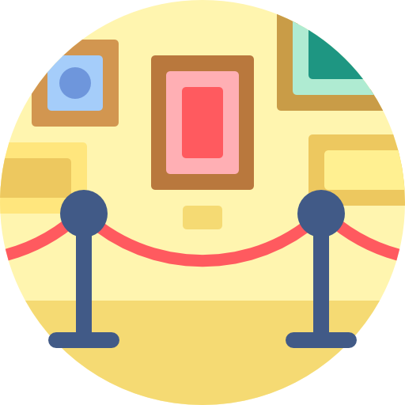

Ora metti insieme tutti gli spunti che hai
avuto da questo lavoro e intorno alla parola
IDENTITA’, crea una macedonia di altre
parole che ti vengono in mente.
Prova a rendere la grafica delle parole
esteticamente accattivante.